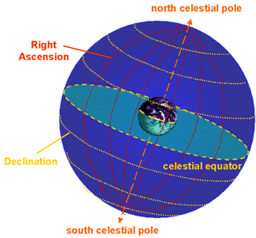

Along with the declination (Dec) and epoch, the ‘right ascension’ (RA) of an object is used to define its position on the celestial sphere in the equatorial coordinate system.
Analogous to the longitude coordinate here on Earth, RA is also an angular distance, measured eastward from the vernal equinox (where the celestial equator intersects the ecliptic). However, primarily for historial reasons, RA is measured in hours, minutes and seconds rather than degrees, minutes and seconds, with 1 hour of RA measured at the celestial equator equal to 15 degrees.
|

The right ascension coordinate is analogous longitude here on Earth.
|

The right ascension of an object indicates its angular distance from the Vernal Equinox.
|
Adding in the Dec and epoch, the coordinates of a typical star may look something like: 12:52:03.32, -47:34:43.0, J2000.0. In other words in the year 2000.0, the star had an RA of 12 hours 52 minutes and 3.32 seconds, and a Dec of 47 degrees 34 arcminutes 43 arcseconds south of the celestial equator.